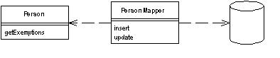
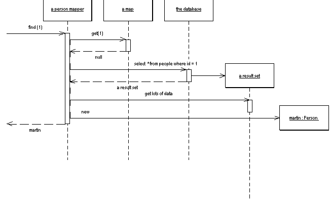
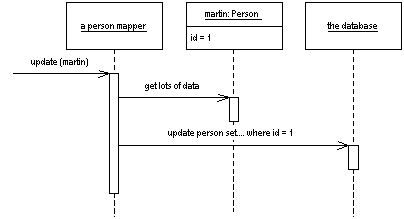
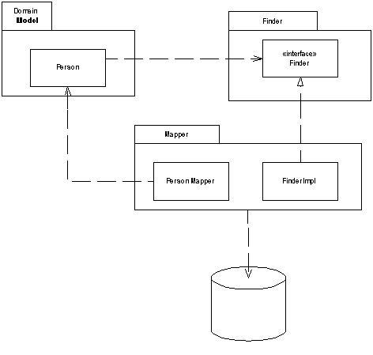
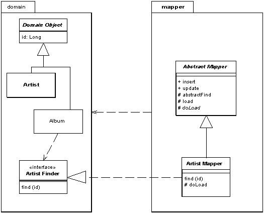

| Home | Articles | Talks | Links | Contact Me | ISA | ThoughtWorks |
Transfers data from a domain object to a database

Objects and relational databases have different mechanisms for structuring data. Many parts of objects, such as collections and inheritance are not present in relational databases. When you are building an object model with a lot of business logic it's valuable to use these mechanisms to better organize the data and the behavior that goes with it.This leads to variant schemas: where the object schema and the relational schema do not match up.
In this situation you still need to transfer data between the two schemas. This data transfer becomes a complexity in its own right. If the in-memory objects know about the relational database structure, then changes in one tend to ripple to the other.
The Data Mapper is a layer of software that acts as a mediator between the in-memory objects and the database. It's responsibility is to transfer data between the two, and also the two layers from each other. Using Data Mapper the in-memory objects need have no knowledge that there's even a database present, no SQL interface code, and certainly no knowledge of the database schema. (The database schema is always ignorant of the objects that use it.)
The separation between domain and data source is the main goal of a Data Mapper, but there are plenty of details that have to be addressed to make it happen. There's also a lot of variety in how different people have built their mapping layers. So much of the comments here are pretty broad, as I try to give a general overview of what you need to separate the cat from it's skin.
We'll start with a very simple database mapper example. This is the simplest style of this layer that you might get, but is often too simple to actually be worth doing. With simple database mapping examples other patterns usually are simpler and thus better. If you are going to use Data Mapper at all you usually need more complicated cases. But it's easier to explain the ideas if we start simple.
Figure 1: Retrieving Data from a Database
A simple case would have a person and person mapper class. To load a person from the database, a client would call a find method on the mapper Figure 1. The mapper uses an Identity Map to see if the person is already loaded, and if not it loads the person.
Figure 2: Updating some data
Updates are similarly simple ( Figure 2). A client asks the mapper to save a domain object. The mapper pulls the data out of the domain object and shuttles it to the database.
The whole layer of Data Mapper can be substituted, either for testing purposes, or to allow a single domain layer to work with different databases.
In this simple case, the mapper separates the database code away from the domain objects, thus making the domain objects simpler as they focus on only one task. But soon other issues come into play which suggest other patterns.
One issue that soon raises its head is how to deal with finding objects. From time to time methods in the domain layer will need to invoke finder behavior. However if the finder behavior is defined in the mappers this will break the dependency rule that says that the domain layer should not depend on the mapper layer. To avoid this you can define interfaces for the finders in a separate package and implement them in the mapper layer ( Figure 3).
Figure 3: Moving the finder behavior into a separate package to separate the dependencies
In this case the domain object calls the finder through the interface, and the finder then calls the mapper to load the data.
This example is a gross simplification in lots of ways, but it should give you a sense of broadly what's going on. The key element to note here are the two principle roles in the layer.
When it comes to inserts and updates, there's a new level of complexity as the database mapping layer needs to understand what objects have changed, which new ones have been created, and which ones have been destroyed. It also has to fit the whole workload into a transactional framework. The Unit of Work pattern is a good way to organize this.
A simple Data Mapper would just map a database table to an equivalent in-memory class on a field to field basis. Of course things aren't usually that simple. Mappers need a variety of strategies to handle classes that turn into multiple fields, classes that have multiple tables, classes with inheritance, and the joys of connecting together objects once they've been sorted out. The other patterns in this chapter deal with these. It's usually easier to deploy these patterns with a Data Mapper, than it is with the other organizing alternatives Gateway and Active Record
Figure 1 suggests that a single request to a finder results in a single SQL query. Often this isn't true. If we want to load a typical order with multiple order lines, then loading orders may involve loading the order lines as well. The request from the client will usually lead to a graph of objects being loaded, with the mapper designer deciding exactly how much to pull back in one go. The point of this is to minimize database queries. Thus the finders typically need to know a fair bit about the way in which the clients typically use the objects so they can make the best choices for pulling data back.
This example also leads to cases where you load multiple classes of domain objects from a single query. If you wanted to load orders and order lines, it will usually be faster to do a single query that joins the orders and order lines tables. You then use the result set would to load both the order and the order line instances.
Since objects are very interconnected, you usually have to stop pulling the data back at some point. Otherwise you are likely to pull back the entire database with a request. Again mapping layers have techniques to deal with this while minimizing the impact on the in memory objects using Lazy Load. Hence the in-memory objects cannot be entirely ignorant of the mapping layer. The in-memory objects need to know about the finders, and a few other mechanisms.
An application can have one Data Mapper or several of them. In smaller applications having a single Data Mapper works well as it is easier to swap out for testing purposes. As a system grows, however, the finder will get too complicated. At this point it's worth breaking up. A common habit is to create one finder per domain class, or at least the head of a domain hierarchy. This leads to a lot of small finders, but it's easy for a developer to find the finder they need.
As with any database find behavior the finders need to use an Identity Map in order to maintain identity of the objects read from the database. You can either have a Registry of Identity Maps or have each finder hold an Identity Map (providing there is only one finder per class per session).
Mappers need to get access to the fields in the domain objects. Often this can be a problem because you need public methods to support the mappers that you don't want for domain logic. (I'm assuming you won't commit the cardinal sin of making fields public.) There's no easy to answer to this. You could use a lower level of visibility by packaging the mappers closer to the domain objects, such as the same package in Java, but this messes up the bigger dependency picture, since you don't want other parts of the system that know the domain objects to know about the mappers. You can use reflection, which often can bypass the visibility rules of the language. Reflection is slower, but the slower speed may end up as just rounding error compared to the time taken by the SQL call. You can use public methods, but guard them with a status field so that they throw an exception if they are used outside the context of a database load. If so name them in such a way that they don't get mistaken for regular getters and setters.
Tied to this is the issue of when you create the object. In essence you have two options. One is to create the object with a rich constructor so the object is created with at least all its mandatory data. The other is to create an empty object and then populate it with the mandatory data. In most contexts I prefer the former since its nice to have a well formed object from the start. This also means that if you have an immutable field you can enforce this by not providing any method to change its value.
The problem with a rich constructor is that you have to be aware of cyclic references. If you have two objects that reference each other, each time you try to load one, it will try to load the other, which will try to load the first object, and so on until you run out of stack space. Avoiding this needs special case code, often using Lazy Load. Since writing this special case code is messy, it's worth trying to avoid it. You can avoid it by creating an empty object. To do this you use a no-arg constructor to create a blank object and insert that empty object immediately into the Identity Map. That way if you have a cycle the Identity Map will return an object to stop the recursive loading.
Using an empty object like this means you may need some setters for values that are really immutable when the object is loaded. A combination of a naming convention and perhaps some status checking guards can avoid this problem. You can also avoid this problem by using reflection for data loading.
One of the decisions you need to make is how to store the information about how the field in domain objects are mapped to columns in the database. The simplest, and often best, way to do this is with explicit code. This requires a mapper class for each domain object. The mapper does the mapping through assignments, and has fields (usually constant strings) to store the SQL for accessing the database. An alternative is to use Metadata Mapping. In this approach the metadata is stored as data, either in a class or in a separate file. The great advantage of using metadata is that all the variation in the in mappers can be handled through data without having to write any more source code, either by using code generation or reflective programming.
The primary reason for using Data Mapper is when you want the database schema and the object model to evolve independently. The most common case for this is when you are using a Domain Model. The primary benefit of Data Mapper is that when working on the domain model you can ignore the database, both in design and within the build and testing process. The domain objects have no idea what the database structure is, because all the correspondence is done by the mappers.
This helps you in the code because you can understand and work with the domain objects without having to understand how they are stored in the database. You can modify either the Domain Model and the database without having to necessarily alter the other. With complicated mappings, particularly those involving existing databases, this is very valuable.
The price, of course, is the extra layer compared to Active Record. The test for using them is the complexity of the business logic. If you have fairly simple business logic then you probably won't need a Domain Model nor Data Mapper. More compiled logic leads you to Domain Model and therefore to Data Mapper.
So I wouldn't choose Data Mapper without Domain Model, but would I use Domain Model without Data Mapper? If the domain model is pretty simple, and the database is under the domain model developers' control, then it's reasonable for the domain objects to access the database directly. Effectively this puts the mapper behavior discussed here into the domain objects themselves. As things become more complicated, however, it's better to refactor the database behavior out into a separate layer.
Remember that you don't have to build a full featured database mapping layer. These are complicated beasts to build in full and there are products available that do this. For most cases I recommend buying a database mapping layer rather than building one yourself.
Here's an absurdly simple use of Data Mapper to give you a feel for the basic structure. Our example is a simple person with an isomorphic people table.
class Person... private String lastName; private String firstName; private int numberOfDependents;
The database schema looks like this
create table people (ID int primary key, lastname varchar, firstname varchar, number_of_dependents int)
We'll use the simple case here, where the person mapper class also implements the finder and Identity Map. However I've added an abstract mapper Layer Supertype to indicate where I can pull out some common behavior. Loading involves checking the object isn't already in the Identity Map, and then pulling the data from the database.
The find behavior starts in the person mapper which wraps calls to an abstract find method to find by id.
class PersonMapper...
protected String findStatement() {
return "SELECT " + COLUMNS +
" FROM people" +
" WHERE id = ?";
}
public static final String COLUMNS = " id, lastname, firstname, number_of_dependents ";
public Person find(Long id) {
return (Person) abstractFind(id);
}
public Person find(long id) {
return find(new Long(id));
}
class AbstractMapper...
protected Map loadedMap = new HashMap();
abstract protected String findStatement();
protected DomainObject abstractFind(Long id) {
DomainObject result = (DomainObject) loadedMap.get(id);
if (result != null) return result;
PreparedStatement findStatement = null;
try {
findStatement = DB.prepare(findStatement());
findStatement.setLong(1, id.longValue());
ResultSet rs = findStatement.executeQuery();
rs.next();
result = load(rs);
return result;
} catch (SQLException e) {
throw new ApplicationException(e);
} finally {
DB.cleanUp(findStatement);
}
}
The find method calls the load method. This method is split between the abstract and person mappers. The abstract mapper handles checking the id, pulling the id from the data, and registering the new object in the Identity Map
class AbstractMapper...
protected DomainObject load(ResultSet rs) throws SQLException {
Long id = new Long(rs.getLong(1));
if (loadedMap.containsKey(id)) return (DomainObject) loadedMap.get(id);
DomainObject result = doLoad(id, rs);
loadedMap.put(id, result);
return result;
}
abstract protected DomainObject doLoad(Long id, ResultSet rs) throws SQLException;
class PersonMapper...
protected DomainObject doLoad(Long id, ResultSet rs) throws SQLException {
String lastNameArg = rs.getString(2);
String firstNameArg = rs.getString(3);
int numDependentsArg = rs.getInt(4);
return new Person(id, lastNameArg, firstNameArg, numDependentsArg);
}
Notice that the Identity Map is checked twice, once by abstractFind and once by load. There is a reason for this madness.
I need to check the map in the finder, because that way if the object is already there I can save myself a trip to the database - and I always want to save myself that long hike if I can. But I also need to check in the load because I may have queries that I can't be sure of resolving in the Identity Map. Say I want to find everyone whose last name matches some search pattern. I can't be sure that I have all such people already loaded, so I have to go to the database and run a query.
class PersonMapper...
private static String findLastNameStatement =
"SELECT " + COLUMNS +
" FROM people " +
" WHERE UPPER(lastname) like UPPER(?)" +
" ORDER BY lastname";
public List findByLastName(String name) {
PreparedStatement stmt = null;
ResultSet rs = null;
try {
stmt = DB.prepare(findLastNameStatement);
stmt.setString(1, name);
rs = stmt.executeQuery();
return loadAll(rs);
} catch (SQLException e) {
throw new ApplicationException(e);
} finally {
DB.cleanUp(stmt, rs);
}
}
class AbstractMapper...
protected List loadAll(ResultSet rs) throws SQLException {
List result = new ArrayList();
while (rs.next())
result.add(load(rs));
return result;
}
When I do this I may pull back some rows in the result set that correspond to people I've already loaded. I have to ensure I don't make a duplicate, so I have to check the Identity Map again.
Writing a find method this way in each subclass that needs it involves some simple, but repetitive coding. I can eliminate that by providing a general method.
class AbstractMapper...
public List findMany(StatementSource source) {
PreparedStatement stmt = null;
ResultSet rs = null;
try {
stmt = DB.prepare(source.sql());
for (int i = 0; i < source.parameters().length; i++)
stmt.setObject(i+1, source.parameters()[i]);
rs = stmt.executeQuery();
return loadAll(rs);
} catch (SQLException e) {
throw new ApplicationException(e);
} finally {
DB.cleanUp(stmt, rs);
}
}
For this to work I need an interface that wraps both the SQL string and the loading of parameters into the prepared statement
interface StatementSource... String sql(); Object[] parameters();
I can then use this facility by providing a suitable implementation as an inner class.
class PersonMapper...
public List findByLastName2(String pattern) {
return findMany(new FindByLastName(pattern));
}
static class FindByLastName implements StatementSource {
private String lastName;
public FindByLastName(String lastName) {
this.lastName = lastName;
}
public String sql() {
return
"SELECT " + COLUMNS +
" FROM people " +
" WHERE UPPER(lastname) like UPPER(?)" +
" ORDER BY lastname";
}
public Object[] parameters() {
Object[] result = {lastName};
return result;
}
}
This kind of work can be done in other places where we have repetitive statement invocation code. On the whole I've the examples here more straight to make it easier to follow them, but if you find yourself writing a lot of repetitive straight-ahead code then you should consider doing something similar.
To perform an update I do the JDBC stuff in the Layer Supertype and the selection of fields in subtype.
class AbstractMapper...
class PersonMapper...
private static final String updateStatementString =
"UPDATE people " +
" SET lastname = ?, firstname = ?, number_of_dependents = ? " +
" WHERE id = ?";
public void update(Person subject) {
PreparedStatement updateStatement = null;
try {
updateStatement = DB.prepare(updateStatementString);
updateStatement.setString(1, subject.getLastName());
updateStatement.setString(2, subject.getFirstName());
updateStatement.setInt(3, subject.getNumberOfDependents());
updateStatement.setInt(4, subject.getID().intValue());
updateStatement.execute();
} catch (Exception e) {
throw new ApplicationException(e);
} finally {
DB.cleanUp(updateStatement);
}
}
For the insert, again there's some code that can be factored into the Layer Supertype
class AbstractMapper...
public Long insert(DomainObject subject) {
PreparedStatement insertStatement = null;
try {
insertStatement = DB.prepare(insertStatement());
subject.setID(findNextDatabaseId());
insertStatement.setInt(1, subject.getID().intValue());
doInsert(subject, insertStatement);
insertStatement.execute();
loadedMap.put(subject.getID(), subject);
return subject.getID();
} catch (SQLException e) {
throw new ApplicationException(e);
} finally {
DB.cleanUp(insertStatement);
}
}
abstract protected String insertStatement();
abstract protected void doInsert(DomainObject subject, PreparedStatement insertStatement)
throws SQLException;
class PersonMapper...
protected String insertStatement() {
return "INSERT INTO people VALUES (?, ?, ?, ?)";
}
protected void doInsert(
DomainObject abstractSubject,
PreparedStatement stmt)
throws SQLException
{
Person subject = (Person) abstractSubject;
stmt.setString(2, subject.getLastName());
stmt.setString(3, subject.getFirstName());
stmt.setInt(4, subject.getNumberOfDependents());
}
In order to allow domain objects invoke finder behavior I can separate the finder interfaces from the mappers. I can put these finder interfaces in a separate package that is visible to the domain layer, or in this case I can put them in the domain layer itself.
Figure 4: Defining a finder interface in the domain package
One of the most common kinds of find is one that finds an object according to a particular surrogate ID. Much of the processing in this is quite generic, so can be handled by a suitable Layer Supertypes. All it needs is a Layer Supertype for domain objects that know about ids.
The specific behavior for finding lies in the finder interface. This is usually best not made generic, because you need to know what the return type is.
interface ArtistFinder... Artist find(Long id); Artist find(long id);
The finder interface is best declared in the domain package with finders held in a Registry. In this case I've made the mapper class implement the finder interface.
class ArtistMapper implements ArtistFinder...
public Artist find(Long id) {
return (Artist) abstractFind(id);
}
public Artist find(long id) {
return find(new Long(id));
}
The bulk of the find method is done by the mapper's Layer Supertype. This involves checking the Identity Map to see if the object is already in memory. If not it completes a prepared statement that's loaded in by the artist mapper and executes it.
class AbstractMapper...
abstract protected String findStatement();
protected Map loadedMap = new HashMap();
protected DomainObject abstractFind(Long id) {
DomainObject result = (DomainObject) loadedMap.get(id);
if (result != null) return result;
PreparedStatement stmt = null;
ResultSet rs = null;
try {
stmt = DB.prepare(findStatement());
stmt.setLong(1, id.longValue());
rs = stmt.executeQuery();
rs.next();
result = load(rs);
return result;
} catch (SQLException e) {
throw new ApplicationException(e);
} finally {cleanUp(stmt, rs);
}
}
class ArtistMapper...
protected String findStatement() {
return "select " + COLUMN_LIST + " from artists art where ID = ?";
}
public static String COLUMN_LIST = "art.ID, art.name";
The find part of the behavior is about getting either the existing or a new object, the load part is about putting the data from the database into a new object.
class AbstractMapper...
protected DomainObject load(ResultSet rs) throws SQLException {
Long id = new Long(rs.getLong("id"));
if (loadedMap.containsKey(id)) return (DomainObject) loadedMap.get(id);
DomainObject result = doLoad(id, rs);
loadedMap.put(id, result);
return result;
}
abstract protected DomainObject doLoad(Long id, ResultSet rs) throws SQLException;
class ArtistMapper...
protected DomainObject doLoad(Long id, ResultSet rs) throws SQLException {
String name = rs.getString("name");
Artist result = new Artist(id, name);
return result;
}
Notice that the load method also checks the Identity Map. Although this is redundant in the this case, the load can also be called by other finders that haven't already done this check.
In this scheme all a subclass has to do is to develop a doLoad method to load the actual data that's needed, and return a suitable prepared statement from the findStatement method.
You can also do a find based on a query. In this case consider a database of tracks and albums.. We want a finder that will find all the tracks on a specified album. Again the interface declares the finders.
interface TrackFinder... Track find(Long id); Track find(long id); List findForAlbum(Long albumID);
Since this is a specific find method for this class, this find method is implemented in a specific class, such as the track mapper class, rather than a Layer Supertype. Like any finder, there are two methods to the implementation. One is setting up the prepared statement, the other is a method to wrap the call to the prepared statement, and interpret the results.
class TrackMapper...
public static final String findForAlbumStatement =
"SELECT ID, seq, albumID, title " +
"FROM tracks " +
"WHERE albumID = ? ORDER BY seq";
public List findForAlbum(Long albumID) {
PreparedStatement stmt = null;
ResultSet rs = null;
try {
stmt = DB.prepare(findForAlbumStatement);
stmt.setLong(1, albumID.longValue());
rs = stmt.executeQuery();
List result = new ArrayList();
while (rs.next())
result.add(load(rs));
return result;
} catch (SQLException e) {
throw new ApplicationException(e);
} finally {cleanUp(stmt, rs);
}
}
The finder calls a load method for each row in the result set. This method has the responsibility of creating the in memory object and loading it with the data. As the in the previous example, some of this can be handled in a Layer Supertype, including checking the Identity Map to see if something is already loaded.
There are two basic approaches for loading an object. One is to create a fully valid object with a constructor, which is what I've done in the examples above. This results in the following loading code.
class AbstractMapper...
protected DomainObject load(ResultSet rs) throws SQLException {
Long id = new Long(rs.getLong(1));
if (loadedMap.containsKey(id)) return (DomainObject) loadedMap.get(id);
DomainObject result = doLoad(id, rs);
loadedMap.put(id, result);
return result;
}
abstract protected DomainObject doLoad(Long id, ResultSet rs) throws SQLException;
class PersonMapper...
protected DomainObject doLoad(Long id, ResultSet rs) throws SQLException {
String lastNameArg = rs.getString(2);
String firstNameArg = rs.getString(3);
int numDependentsArg = rs.getInt(4);
return new Person(id, lastNameArg, firstNameArg, numDependentsArg);
}
The alternative approach is to create an empty object and load it with the setters later.
class AbstractMapper...
protected DomainObjectEL load(ResultSet rs) throws SQLException {
Long id = new Long(rs.getLong(1));
if (loadedMap.containsKey(id)) return (DomainObjectEL) loadedMap.get(id);
DomainObjectEL result = createDomainObject();
result.setID(id);
loadedMap.put(id, result);
doLoad (result, rs);
return result;
}
abstract protected DomainObjectEL createDomainObject();
abstract protected void doLoad(DomainObjectEL obj, ResultSet rs) throws SQLException;
class PersonMapper...
protected DomainObjectEL createDomainObject() {
return new Person();
}
protected void doLoad(DomainObjectEL obj, ResultSet rs) throws SQLException {
Person person = (Person) obj;
person.dbLoadLastName(rs.getString(2));
person.setFirstName(rs.getString(3));
person.setNumberOfDependents(rs.getInt(4));
}
You'll notice I'm using a different kind of domain object Layer Supertype here. This is because I want to control the use of the setters. Let's say that I want the last name of a person to be an immutable field. If this is the case I don't want to change the value of the field once it's loaded.
I can do this by adding a status field to the domain object.
class DomainObjectEL...
private int state = LOADING;
private static final int LOADING = 0;
private static final int ACTIVE = 1;
public void beActive() {
state = ACTIVE;
}
I can then check the value of this during a load
class Person...
public void dbLoadLastName(String lastName) {
assertStateIsLoading();
this.lastName = lastName;
}
class DomainObjectEL...
void assertStateIsLoading() {
Assert.isTrue(state == LOADING);
}
The thing I don't like about this is that we now have a method in the interface that most clients of the person class cannot use. This is an argument for the mapper using reflection to set the field, which will completely bypass the Java's protection mechanisms.
Is the status based guard worth the trouble? I'm not entirely sure. On the one hand it will catch bugs due to people calling update methods at the wrong time. But the question is whether the seriousness of the bugs is worth the cost of the mechanism. At the moment I don't have a strong opinion either way.
 |  |
{kind=link}
{kind=link}
{kind=link}